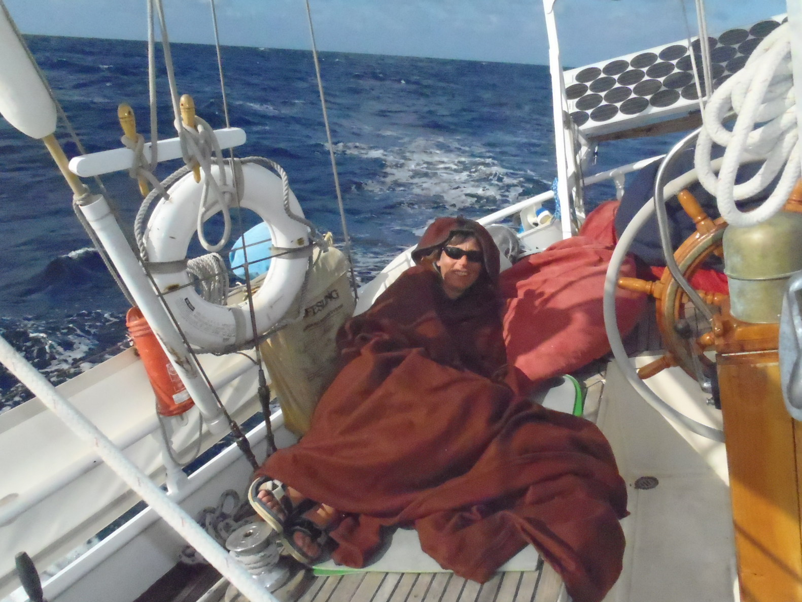

Saturday, October 2nd, 2010
Outside the gate, that was a bit choppy, as we had the wind on the nose, and the current behind us. But that was all right. Cloudy sky, as expected. We had some porpoises around us.

We had all sails out, starboard tack.
We were heading, but the wind was nicely shifting clockwise, and at 5pm, we were able to begin to ease the sheets, I was not expecting this to happen that early.
At 6pm, a couple of whales (humpback whales) were jumping out of the water and hitting the surface with their tail and fins... Spectacular. One came close to the boat, blowing just next to Corine.
At night, there was no moon, and the wake was all shining with plankton. Soon after that, some porpoises came to play in the plankton as well.
To make sure she does not get sick, Corine had decided to sleep on the deck. She had her Afghan foulies on.  Unexpectedly, the sea is not too rough, the night is quiet. It's good for a start. And the weather is not cold.